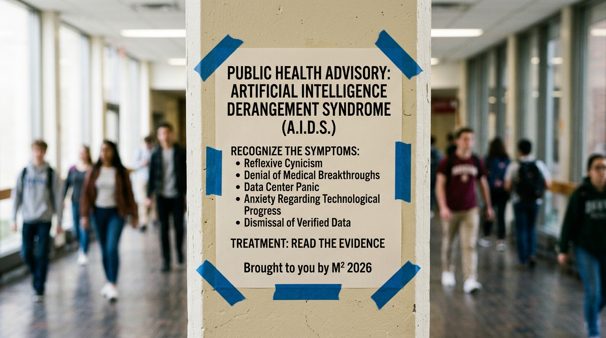

Artificial Intelligence Derangement Syndrome (AIDS)

If you spend five minutes on social media, you will inevitably encounter it: a pervasive, reflexive hysteria that greets every artificial intelligence milestone not with curiosity or rigorous analysis, but with visceral disgust, apocalyptic doom-mongering, or sneering dismissal. It is a psychological condition we can classify as Artificial Intelligence Derangement Syndrome (AIDS).
Afflicted individuals will watch an AI solve a 50-year-old grand challenge in molecular biology and scoff, "It’s just an energy-guzzling auto-complete plagiarism machine." They will watch AI discover novel life-saving antibiotics and cry, "It’s going to boil the oceans and take all our jobs tomorrow!"
This page exists as a permanent antidote. When bad-faith actors or misinformed doom-scrollers start talking nasty or posting silly claims about AI on your feed, hand them this link. Below are the verified facts, the revolutionary medical breakthroughs, the genuine humanitarian goods already delivered, and the empirical debunking of the data-center and job-loss panics—complete with direct peer-reviewed and institutional citations.
1. The Diagnosis: What Is AI Derangement Syndrome?
AI Derangement Syndrome is characterized by three core cognitive distortions:
- The "Parlor Trick" Fallacy: Reducing revolutionary deep learning architectures, transformer networks, and neural computational models to "glorified spellcheck" or a "bubble that will burst next month."
- Zero-Sum Doomism: Assuming that any kilowatt of power consumed or any automated task performed represents the imminent collapse of either the electric grid, the labor market, or human civilization.
- Willful Blindness to Human Benefit: Outright refusal to acknowledge that AI is actively curing diseases, preventing blindness, predicting catastrophic natural disasters, and engineering clean-energy materials.
Clinical Diagnostic Note: Moral and technological panics are not new. When the steam locomotive was invented, critics claimed human bodies would disintegrate at 30 mph. When the printing press emerged, scribes claimed public literacy would rot moral memory. AIDS is simply the 21st-century iteration of techno-reactionary panic.
Section Citations:
- Pew Research Center: Public Perceptions and Emerging Technologies
- Nature Human Behaviour: Psychological Drivers of Fear and Misinformation in Frontier Tech
2. Medical Breakthroughs: Saving Lives in the Real World
While cynics on social media debate whether LLMs are "overhyped," biomedical researchers and oncologists are deploying artificial intelligence to solve challenges that baffled humanity for generations.
Solving Biology's 50-Year Grand Challenge (AlphaFold)
For half a century, determining the 3D structure of a single protein took a PhD student years of painstaking X-ray crystallography and millions of dollars. Google DeepMind's AlphaFold predicted the structure of virtually all 200 million known proteins in the catalog of life. The latest AlphaFold 3 extends this to DNA, RNA, ligands, and ions—transforming targeted drug design from a random lottery into a precision computation.
Discovering Novel Antibiotics Against Deadly Superbugs
Antimicrobial resistance is one of humanity's quietest existential threats. Drug-resistant superbugs like Acinetobacter baumannii and MRSA kill millions. Using deep learning models, MIT and McMaster researchers screened hundreds of millions of chemical compounds in a matter of days, discovering entirely novel classes of antibiotics: Halicin and Abaucin. These compounds kill resistant pathogens through mechanisms structurally distinct from any antibiotic discovered by conventional pharma in 40 years.
Catching Cancer Years Before Human Eyes Can
AI computer-vision systems applied to mammography, low-dose CT scans, and dermoscopy are detecting early-stage malignancies—including breast cancer, micro-lung nodules, and pancreatic adenocarcinoma—years before they become clinically symptomatic or visible to standard radiologist review, cutting false negatives by over 30% while expanding screening access worldwide.
Ending Pediatric "Diagnostic Odysseys"
Children born with rare genetic disorders frequently spend 5 to 7 years seeing dozens of specialists before receiving an accurate diagnosis. Deep-learning genomic pipelines like DeepVariant and automated phenotyping now cross-reference whole-genome sequences against global literature in hours, identifying causative mutations and enabling immediate gene-targeted therapies.
Section Citations & Evidence:
- Nature: Accurate Structure Prediction of Biomolecular Interactions with AlphaFold 3
- MIT News & Cell: Artificial Intelligence Identifies Powerful New Antibiotic (Halicin)
- Nature Chemical Biology: Deep Learning-Guided Discovery of an Antibiotic Targeting Acinetobacter baumannii
- Nature: International Evaluation of an AI System for Breast Cancer Screening
- Nature Biotechnology: A Universal SNP and Small-Indel Variant Caller Using Deep Neural Networks
3. Real-World Good AI Has Already Delivered
Beyond hospitals and laboratories, machine intelligence is operating in critical infrastructure and humanitarian domains right now.
Predicting Catastrophic Weather Faster Than Supercomputers
Traditional weather forecasting requires massive national supercomputers running numerical simulations for hours. DeepMind's GraphCast uses deep neural networks to produce 10-day global weather predictions in less than a minute on a single Google TPU machine, predicting cyclone trajectories, severe flooding, and temperature anomalies with significantly higher accuracy than the European Centre for Medium-Range Weather Forecasts (ECMWF) gold standard—at a fraction of the compute energy.
Engineering 800 Years of New Materials for Green Energy
The transition to green power depends on finding new battery chemistries, solar cell materials, and superconductors. The GNoME (Graph Networks for Materials Exploration) model expanded humanity's known stable crystalline materials from roughly 48,000 to over 420,000. That is the equivalent of 800 years of trial-and-error laboratory synthesis achieved computationally, with hundreds of novel materials already verified by autonomous robotic labs.
Restoring Human Speech and Vision
For individuals paralyzed by ALS, strokes, or brainstem damage, brain-computer interfaces combined with recurrent neural networks now decode neural intent into fluent, synthesized speech in real-time, matching natural human conversational rates. Concurrently, multimodal AI tools like Be My Eyes empower millions of visually impaired individuals to navigate physical spaces, read unlabelled medications, and explore their surroundings autonomously.
Section Citations & Evidence:
- Science: Learning Skillful Medium-Range Global Weather Forecasting with GraphCast
- Nature: Scaling Deep Learning for Materials Discovery (GNoME)
- Nature: A High-Performance Neuroprosthesis for Speech Decoding (UCSF / Brain-Computer Interface)
- Be My Eyes & OpenAI: Multimodal Accessibility for the Visually Impaired
4. Deconstructing the Hype: Data Centers & Energy Realities
The latest rallying cry of the anti-AI brigade is environmental doom: "AI data centers are going to drain the entire power grid and boil the planet!"
This is a classic failure of systems-level thinking and economic context. Let's look at the actual data:
- Extreme Efficiency (PUE): Modern hyperscale data centers operate with a Power Usage Effectiveness (PUE) of approximately 1.1 to 1.2, meaning over 85–90% of electricity directly powers computation, compared to older corporate data centers that wasted half their energy on inefficient cooling.
- The Catalyst for the Clean Energy Renaissance: AI hyperscalers are the single largest corporate buyers of renewable energy and clean baseload power on Earth. Tech giants are not asking utilities to burn coal; they are underwriting multi-gigawatt power purchase agreements (PPAs) for solar, wind, advanced geothermal, and modern nuclear plants that would otherwise have zero capital backing.
- The Nuclear Power Resurgence: Constellation Energy is reopening the Unit 1 reactor at Three Mile Island (renamed the Crane Clean Energy Center) to supply 835 megawatts of 100% carbon-free electricity to Microsoft. Similar small modular reactor (SMR) and advanced nuclear partnerships by Google, Amazon, and others are reviving zero-emission baseload power that the environmental movement spent decades stalling.
- Net Energy Efficiency Across the Economy: Every hour of compute spent optimizing shipping logistics, managing building thermal envelopes, or discovering room-temperature superconductor materials saves ten to one hundred times more megawatt-hours in the physical economy than the GPU cluster consumed.
Section Citations & Evidence:
- International Energy Agency (IEA): Data Centres and Energy Systems Analysis
- Constellation Energy: Launching Crane Clean Energy Center – Restoring Carbon-Free Nuclear Power
- U.S. Department of Energy: Pathways to Commercial Liftoff for Advanced Nuclear
5. Deconstructing the Hype: Job Loss & Economic Reality
The other staple of AI Derangement Syndrome is the guaranteed "job apocalypse"—the conviction that all human labor will be rendered obsolete by lunch next Tuesday.
This panic relies on the Lump of Labor Fallacy—the debunked economic assumption that there is a fixed quantity of work to be done in an economy, and that if a machine does part of it, human workers must starve. Economists have studied every technological disruption from the cotton gin to the spreadsheet:
- Task Automation vs. Job Elimination: AI automates discrete, repetitive cognitive tasks (writing boilerplate, parsing 5,000 pages of legal discovery, aggregating sensor telemetry). It does not automate human accountability, contextual judgment, physical presence, client trust, or creative leadership.
- Leveling the Playing Field: Extensive studies by MIT and Stanford (e.g., Brynjolfsson, Li, and Raymond) demonstrate that generative AI tools disproportionately benefit less-experienced and lower-skilled workers, elevating their productivity and compensation closer to that of senior peers, while eliminating the mundane drudgery that leads to burnout.
- New Industries and Jevons Paradox: When the cost of computation, analysis, and software development drops toward zero, demand for new software, new diagnostics, and new services explodes exponentially. Cheaper legal analysis doesn't eliminate lawyers; it makes legal access viable for billions of people and businesses who couldn't previously afford it.
- The Real Replacement Rule: You will not be replaced by an AI. You will be replaced by a human being who knows how to leverage AI while you are busy tweeting about why it shouldn't exist.
Section Citations & Evidence:
- National Bureau of Economic Research (NBER): Generative AI at Work (Brynjolfsson, Li, Raymond)
- MIT Economics & David Autor: The Work of the Future – Building Better Jobs in an Age of Intelligent Machines
- World Economic Forum: The Future of Jobs Report
6. The Social Media Field Guide: Drop-In Counterpoints
The next time someone on X, LinkedIn, or Threads posts an inflammatory, bad-faith attack on AI, keep these concise, referenced counter-punches ready:
| Cynic Meme / Claim | Empirical Reality | Evidence / Link |
|---|---|---|
| "AI is a useless parlor trick with zero real-world utility." | AlphaFold mapped 200M+ protein structures; AI discovered novel antibiotics (Halicin/Abaucin) that kill drug-resistant superbugs in hours. | Nature 2024 |
| "Data centers will drain the power grid and kill the climate." | Hyperscalers are single-handedly financing the clean nuclear and geothermal resurgence (e.g., Three Mile Island restart) and run at 90%+ PUE efficiency. | IEA Energy Report |
| "AI will eliminate all knowledge workers and destroy the economy." | NBER and MIT studies show AI boosts bottom-quintile worker productivity, relieves cognitive drudgery, and expands overall task demand (Lump of Labor fallacy). | NBER Working Paper |
| "It's just an energy-guzzling plagiarism generator." | GraphCast predicts catastrophic hurricanes in 60 seconds with higher accuracy than ECMWF supercomputers, using 1,000x less electricity. | Science 2023 |
Closing Diagnostic: Build, Don't Derange
Artificial intelligence is not a magic wand, nor is it Skynet. It is the most formidable computational instrument ever engineered by human beings. It will cause frictions, it requires robust engineering ethics, and it demands responsible guardrails.
But giving in to Artificial Intelligence Derangement Syndrome—surrendering to fatalism, ignoring medical cures, and sneering at clean-energy breakthroughs—is not intellectual rigor. It is simply fear masquerading as sophistication. Let the cynics tweet in circles. The builders are busy saving lives and engineering the future.